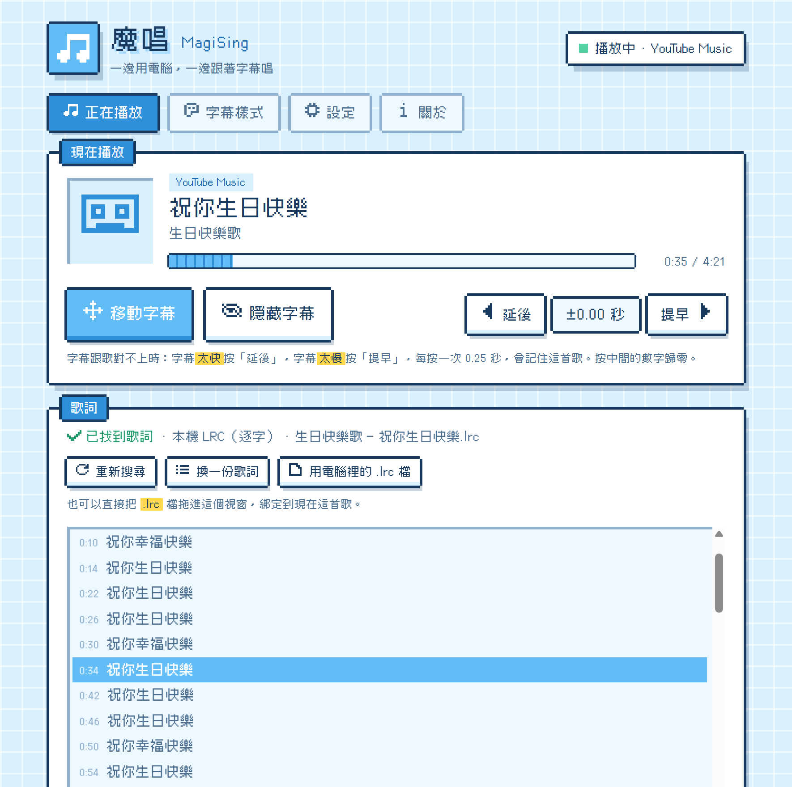
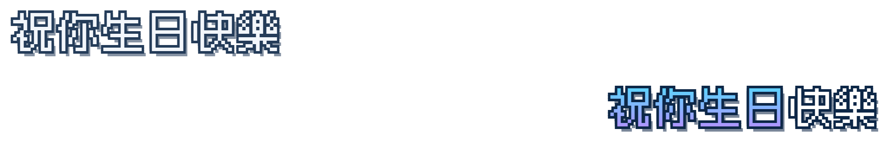
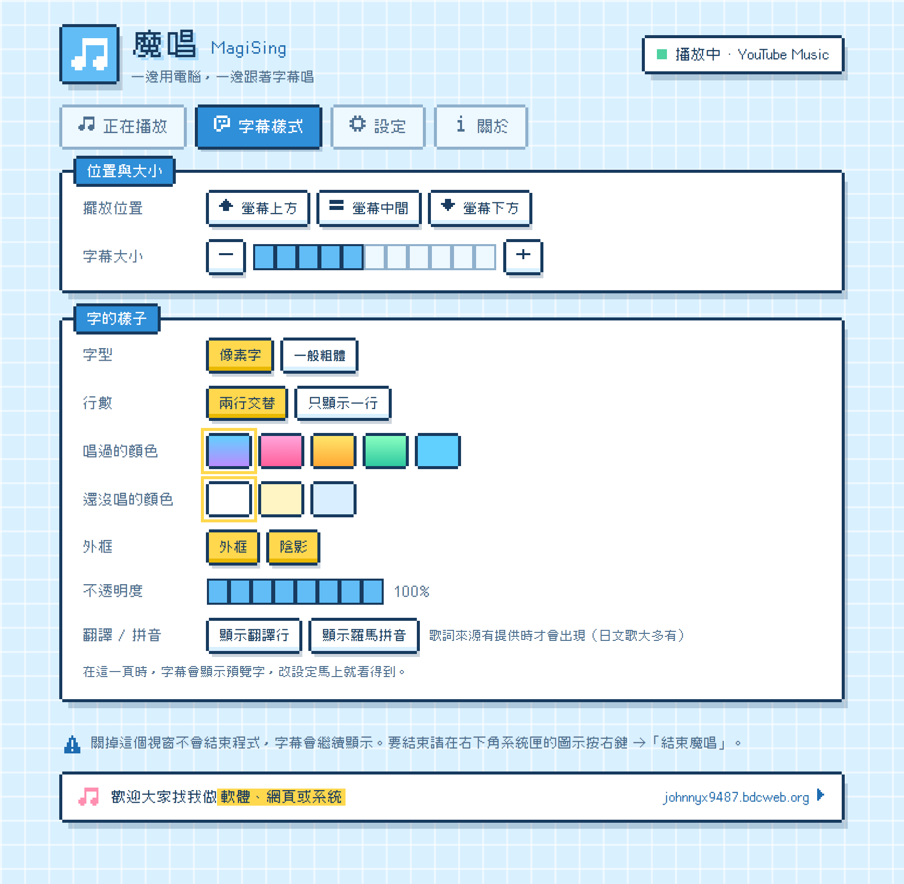

播歌時自動找歌詞，在螢幕上顯示 KTV 逐字字幕。
字幕浮在所有視窗上面，滑鼠直接點穿，不影響你做事。


開著就好。換歌時自動到網易雲音樂、酷狗音樂、LRCLIB 找最符合的歌詞，依語言挑最適合的來源。

字幕放哪、多大、什麼顏色都能調，改設定的時候字幕會顯示預覽字，馬上看得到效果。
按「免費下載」取得 MagiSing_Setup_版本.exe。系統需求：Windows 10 21H2 以上或 Windows 11。
依畫面按下一步。少數 Windows 10 沒有 WebView2 時，會自動從微軟下載安裝。
如果跳出「Windows 已保護您的電腦」，按「其他資訊」→「仍要執行」。這是因為安裝檔還沒有程式碼簽章，Windows 還不認得這個新程式；簽章正在申請中。
打開你常用的播放器播歌，字幕就會出現。魔唱會待在右下角的系統匣，關掉控制面板字幕照樣顯示；要結束請在系統匣圖示按右鍵 →「結束魔唱」。
魔唱只在找歌詞時，把正在播放的歌名、歌手與歌曲長度（LRCLIB 另含專輯名稱）以及手動搜尋的關鍵字，送給你開著的歌詞服務。除此之外不會把任何資訊傳出去。
酷狗的歌曲搜尋是未加密的 HTTP 連線。歌詞服務全部關掉時，只用電腦裡的 .lrc 檔。
字幕太快或太慢時微調一下，每首歌各自記住。快捷鍵都可以在「設定」裡改。